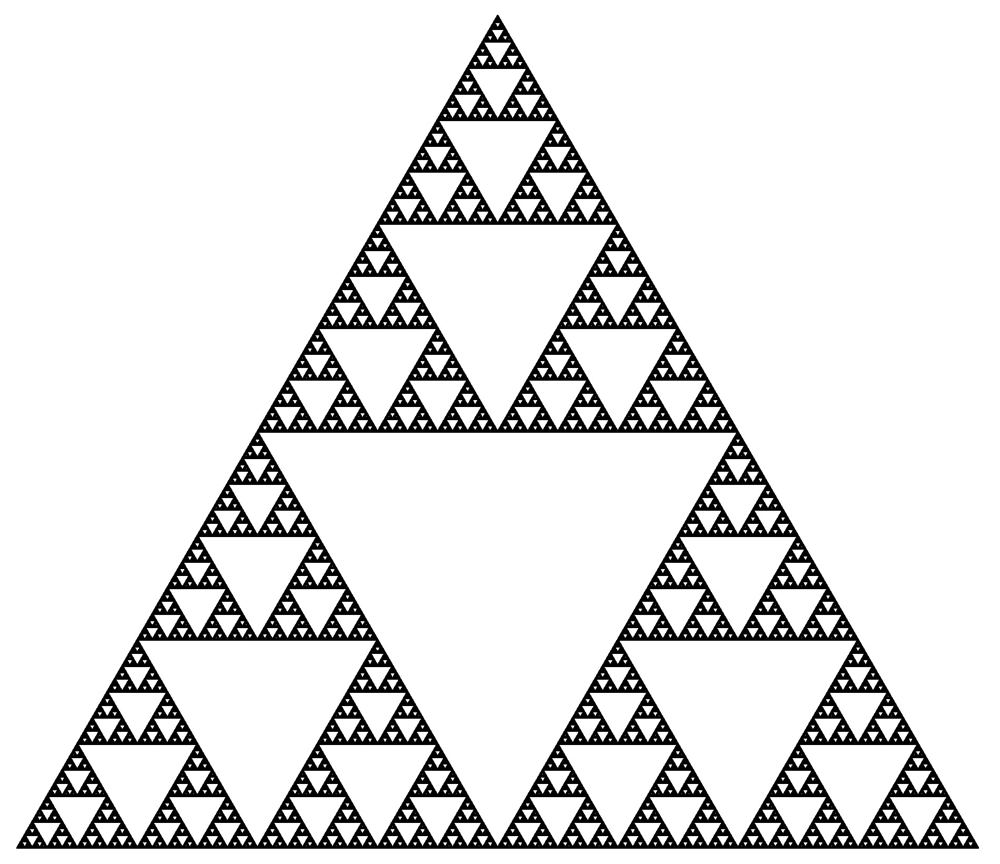

Fracals
Various fractals implemented in Python, drawn using Turtle and recursion.
The source code for each of these is displayed here, in order:
Hilbert Curve, Koch Snoflake, Dragon Curve and Sierpinski Triangle.
The source code can also be found in my GitHub
old-projects repository.


